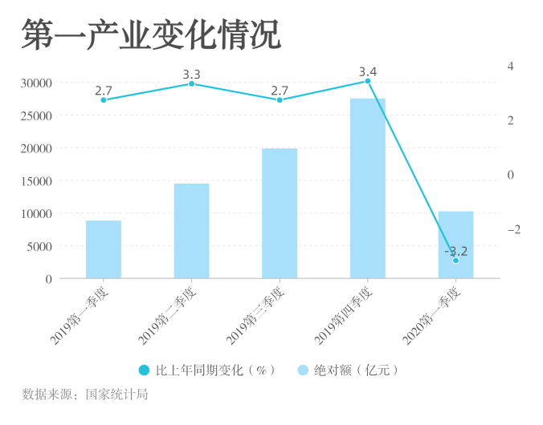

2020年初，一场来势汹汹的新型冠状病毒肺炎席卷中国大地。
1月23日，「九省通衢」武汉封城。随后，各省陆续进入戒严状态。
1月27日，国务院办公厅发布春节假期延长的通知，全国陷入漫长停摆。
封锁的交通、停滞的经济动脉，为国民经济带来前所未有的寒冬，不少企业的生命也停留在这个冬天。
柏拉图小组梳理了疫情期间申请或宣告破产的企业，希望借此描摹近年来经济寒冬的图景。
根据国家统计局，2020年一季度各行业产值同比下降最为严重的行业为：住宿和餐饮业；批发和零售业；建筑业；交通、仓储和邮政业。其中，住宿和餐饮业同比下降超过35%，为疫情中遭受最重打击的行业。
由于疫情中中国社会处于隔离状态，软件和信息技术业是为数不多同比增长的行业，增幅达到了13.2%。另外，金融业也有一定的同比增长。
与以往季度相比，2020年一季度的第一、二、三产业同期增速首次出现负增长，分别达到 -3.2%、-9.6%、-6.2%。
2020年1月以来，全国城镇调查失业率[1]较2019年有较高增长。2月，城镇调查失业率达到6.2%的高峰，3月回落0.3个百分点。
同时，一季度全国居民人均可支配收入8561元，同比名义增长0.8%，扣除价格因素实际下降3.9%。其中城镇居民人均可支配收入实际下降3.9%，农村居民人均可支配收入实际下降4.7%。
[1]城镇调查失业率：通过抽样调查所取得的，指城镇调查失业人数占城镇调查从业人数与城镇调查失业人数之和的比。
在所抓取的1647份法律文书中，2018年、2019年和2020年的数量分别为160份、690份和797份。主要文书类型为通知书、决定书、裁定书。
这些法律文书包括：受理债权人/债务人的破产清算申请；受理债务人提出的重整申请[1]；批准重整计划草案；指定破产管理人[2]；关联企业合并破产裁定书；终结破产程序；终结强制清算程序；认可破产财产分配方案；宣告债务人破产；等等。
[1] 破产：指债务人因不能偿债或者资不抵债时，由债权人或债务人诉请法院宣告破产并依破产程序偿还债务的一种法律制度。
重整：指债权人申请对债务人进行破产清算的，可以向人民法院申请重整，即对该企业进行重新整顿、调整。即不对无偿付能力债务人的财产进行立即清算，而是在法院主持下制定重组计划，规定在一定期限内债务人按一定方式全部或部分清偿债务，同时债务人可以继续经营其业务的制度。
[2] 破产管理人：指破产案件中，在法院的指挥和监督之下全面接管破产财产并负责对其进行保管、清理、估价、处理和分配的专门机构。
1月19日-4月1日，共有290家企业向法院提起破产申请。从1月末到整个2月，由于春节和新冠疫情的影响，法院登记在案的每日破产申请数量在3件左右；3月以来，随着全国开始复工，企业提请破产数量开始上升，在3月10日达到了19件的高峰。总体而言，企业申请破产数量呈现随着疫情由低到高的趋势。
将这1022家企业的名称进行分词和词频统计后，我们得到了左侧的词云图。
科技、开发、贸易、地产、投资、汽车、材料、管理、机械、电子、实业、工程、化工、工程、纺织，成为这场破产（重整）风波中的关键词。
从全国范围来看，疫情期间申请破产/重整、宣告破产的企业主要分布在东部和南部地区。
上海市（129家）、苏州市（86家）、北京市（71家）、重庆市（47家）、常熟市（32家）、昆山市（25家）五个地区位列申请破产或重整企业数量最多的地区前五名。
其中，吉林省农安县有22家粮库扎堆宣告破产，新疆阿勒泰地区青河县则有13家矿业公司扎堆申请破产。农安县是中国肉类生产第二大县市、全国农畜产品大县，而青河县矿产资源丰富，已发现煤、铁、金、银、锂、铀及宝石、白云母等矿种，拥有2000吨/日金选厂生产线。
*注：以上所述各地区的行政等级不尽平行。
从一线、二线、三线及以下城市进行划分，破产（重整）企业的分布存在着显著的不平衡，倾向于分布在一线城市。出现破产（重整）企业的一线城市有17个，总计的破产（重整）企业数量为523家，远超86个三线及三线以下城市中的总计破产（重整）企业数量。
*注：这里的城市仅为我们所抓取信息中涉及的城市；“一线城市”除北上广深外包含15个新一线城市（成都、杭州、重庆、武汉、西安、苏州、天津、南京、长沙、郑州、东莞、青岛、沈阳、宁波、昆明）。
在提起破产/重整或宣告破产的1022家企业中，有663家企业为小微企业，占总数的65%。
这个经济寒冬，是一个对小微企业尤其寒冷的冬天。
根据天眼查平台显示的工商信息，在疫情期间申请宣告或破产的1022家企业中，有限责任公司和股份有限公司占到91.97%，其中905家企业为有限责任公司（88.55%）、35家企业为股份有限公司（3.42%）。
另外，36家企业为国家所有制，21家企业为集体所有制，还有9家个人独资企业和1家合伙企业。在国家所有制和集体所有制企业中，企业主要涉及第一、二产业，如粮库、印染厂、毛纺厂等。
在1022家申请破产/重整或宣告破产的企业中，企业资金规模分布呈现出明显的“扎堆”效应和阶梯效应。以1亿为分界线，有900家企业注册资金在1亿以下，占总数的88.06%；以1000万为分界线，有560家企业注册资金在1000万以下，占1亿以内企业的62.22%。
此外，这些企业的资金规模呈正态分布。企业注册资金规模集中分布在100万-1亿的区间，注册资金在1000万左右的企业最多。
其中亿阳集团股份有限公司的注册资金最高，达39.22亿。该企业成立于1988年，是一个以IT、能源、资源、新材料和健康产业为主要业务的高科技产业集团，2017年陷入债务危机，于2019年3月向法院提起破产重整。
从行业领域分布来看，1022家破产（重整）企业以第三产业和第二产业为主，分别占到总数的57.84%和37.78%。其中，制造业、建筑业和加工业以及批发业、服务业、商业、房地产分别是是破产（重整）企业在第二、第三产业最为集中的领域。
观察制造业相关股票基金的近期走向，我们发现，受疫情影响，1月20日后，几只重要股票均出现明显的下跌情况，于2月3日到达波谷。3月中旬，随着疫情形势好转，全国各地开始复工，这几只制造业股票基金开始回暖。
在1022家破产（重整）企业中，企业寿命分布从1年到122年不等。其中最长寿的企业是1899年成立的农安县华家粮库，为国家所有制，极少数企业为40年以上的企业。总体来看，破产（重整）企业的主要“寿命”分布区间为5-28年。
参考资料：
1. 2020年第一季度各项经济数据
http://www.stats.gov.cn/tjsj/zxfb/202004/t20200417_1739327.html
2. 2019年各季度及2020年一季度GDA初步核算结果
http://www.stats.gov.cn/tjsj/zxfb/201904/t20190418_1660244.html
http://www.stats.gov.cn/tjsj/zxfb/201907/t20190716_1676299.html
http://www.stats.gov.cn/tjsj/zxfb/201910/t20191018_1703498.html
http://www.stats.gov.cn/tjsj/zxfb/202001/t20200117_1723591.html
http://www.stats.gov.cn/tjsj/zxfb/202004/t20200417_1739602.html